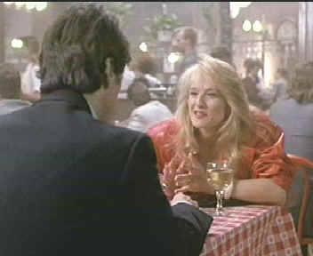

|
Sea
of Love/B+,C+ |
|
Universal/1989/124m/ANA
1.85 |
Sea of Love is Harold Becker's best film. The director of
films ranging from the down and dirty ugly little drug film The
Boost to the cop movie The Onion Field and most
recently Mercury Rising, Becker seemed to find the right
ingredients and control over Sea of Love. The director
benefits from an outstanding screenplay from Richard Price. The
characters are savvy, they have dialog that sounds like it was
born on the New York streets, and above all, the seem to have a
life beyond the small slice we see on the screen. The New York
City locations are New York. The beat of the film, the sounds of
the city, the lights, the rhythms are on target.
 |
| Barkin
barks at Pacino. ©Universal |
The interesting challenge for Sea of Love is how to
successfully move from a standard cop hunting a serial killer
film to a romance and then to work it's way back to resolve the
mystery. Most of the steps are reasonable and character
motivations can be supported. The only time I really wonder
about the veracity of the screenplay is when cop Frank Keller
lets a loose tongue send a pale of cold water over his romance
with sexy Helen.
Becker and price don't waste much time
in cutting to the quick. The movie opens with a steamy murder.
But before detective Frank Keller is brought on the scene to
investigate, we learn a bit about his humanity and his life.
Even the initial examination of a body by two detectives turns
into more than standard fare as the dialog sparring reveals
character. When Keller teams up with a Queens cop working a
similar case, Sea of Love starts spinning at 45rpms.
There are surprises, but not unjustified plot twists. The
romantic stuff is hot, hot, hot.
Al
Pacino gives cop Frank Keller an edgy quality, adding a lot of
spark to the film. Pacino is no stranger to the cop role, having
done about four variations on the guy with the badge over the
years. Back in 1989 Pacino did not look too old for his female
co-star, a sex hungry Ellen Barkin. The sex scenes are steamy
without making viewers feel voyeuristic. There's a genuine
hunger generated by the actors. If anything, the sex advances
the plot, and that says a lot about the quality of the
screenplay and direction. John Goodman makes a great cop buddy
for Pacino. Goodman's girth and humor alongside the slight and
intense Pacino adds pounds to the picture.
Sea of Love is one of the
unfortunate early DVD releases when Universal was on the fence
about releasing all their films in original aspect ratio. It
appears to be full frame, or close to it. Few of the scenes
appear cramped or chopped. There is definitely too much noise in
the picture from edge enhancement. There's jitter evident in the
opening credits and through the early scenes and I am not really
certain if my eyes just got used to it, but in the end it did
not bother me very much. Discrete filtering might have
alleviated some of the nasty Venetian blind scenes and finely
detailed textured tend to be jumpy. The color is excellent. The
night scenes are dynamic and the picture has plenty of contrast
range. There are no soft scenes. The Dolby Digital 2 channel
sound is in nice balance. Dialog and music are separated nciely
and clearly recorded. In the end, the question of DVD quality to
not enter into the enjoyment of this film. Not outstanding
certainly, but the problems disappeared into the finely woven
plot.
|
The Feature
Archive has articles ranging from John
Ford to Blonde
Bimbos, Akira
Kurosawa and Frank
Darabont.

Click on the image above to access The
Heistmasters, a view of the best directors of the
heist.
Check out the Movie
Poster Archive for short bios and images of
Susan Hayward, Kirk Douglas, Katharine Hepburn and many more.
This month's featured star is Clark
Gable.
Imaging
Science Foundation
The Imaging Science Foundation promotes
proper standards in home theater viewing. ISF trained
technicians offer monitor calibration services to consumers. The
difference in a properly calibrated monitor can be
astounding. Click on the image to find an ISF member near you.
HOT
LINKS
DVD
Verdict
They may be judgmental, but
that's the point, isn't it. Lots of DVD reviews plus news and
more
Home
Theater Reference Reviewing System

When you read a DVD review it's of utmost importance to know
what equipment is being used to evaluate quality. Click on the
projector to find out more.
The
Home Theater Forum
Looking for lively and helpful
exchanges on home theater, DVD, movies. Visit this friendly site
and get a hardy welcome. |